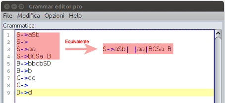
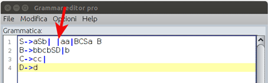

Le regole di produzione possono essere scritte nelle seguenti modalità:
- elencando per ogni non terminale le regole di produzione che gli appartengono.

- utilizzando un metodo di scrittura convenzionale attraverso l' utilizzo del simbolo
pipe che funge da or evitando la riscrittura delle regole di produzione per il medesimo non terminale.
